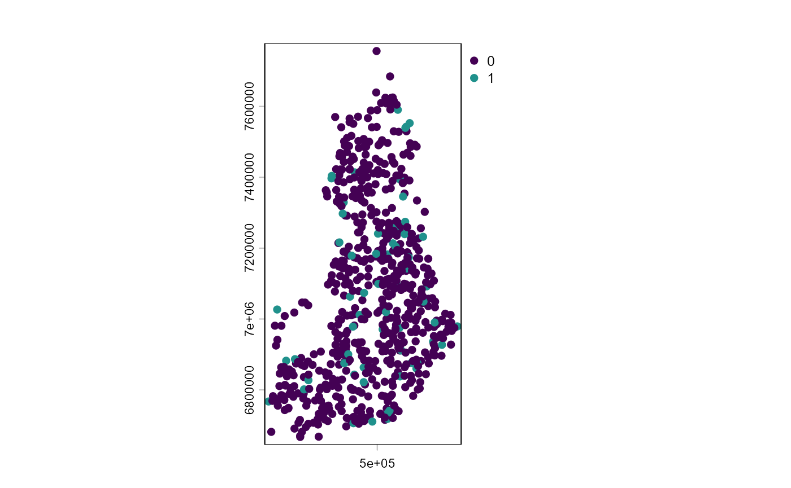
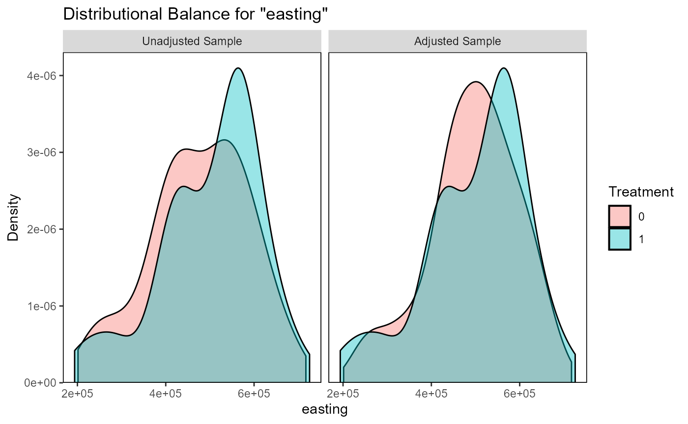
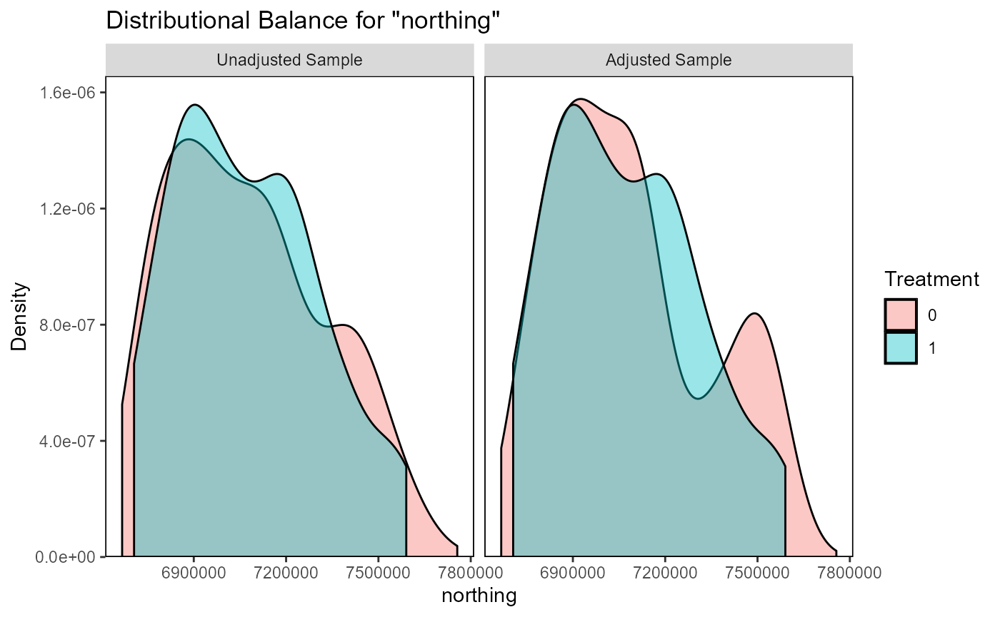
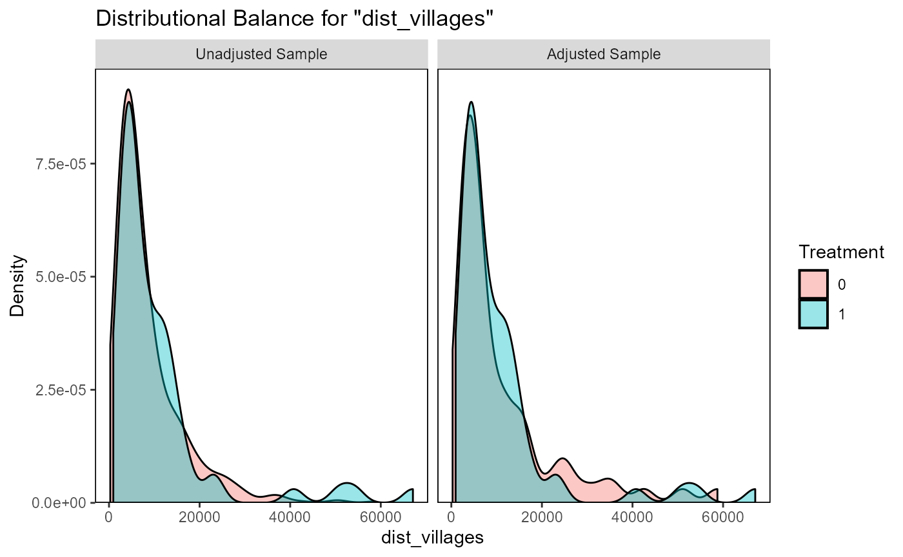
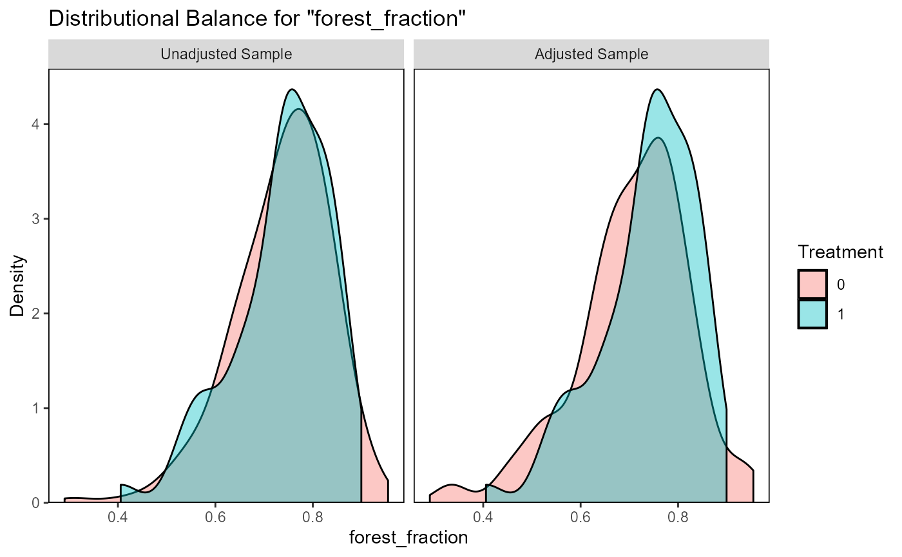
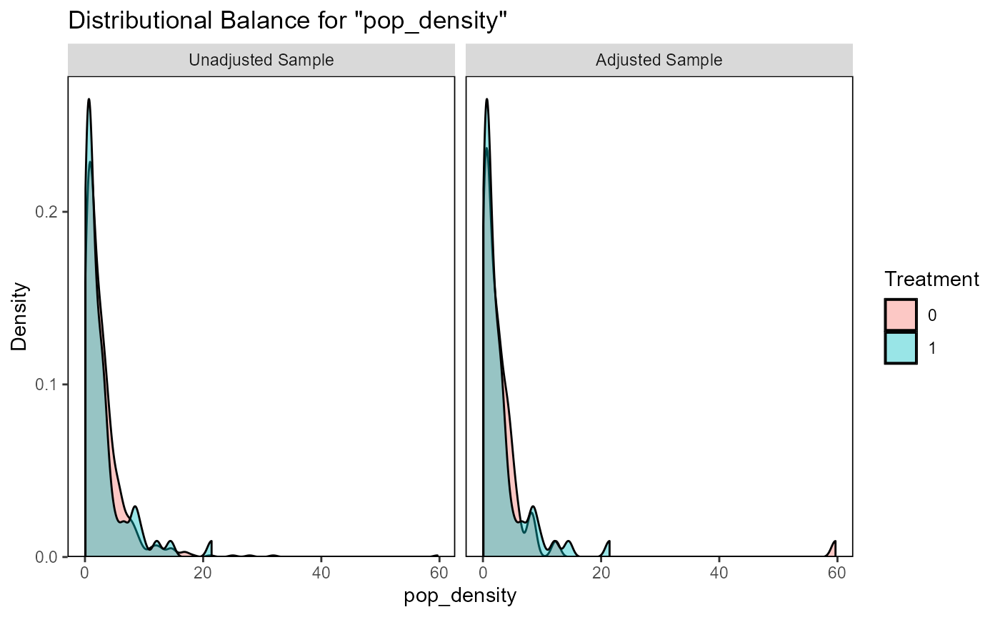
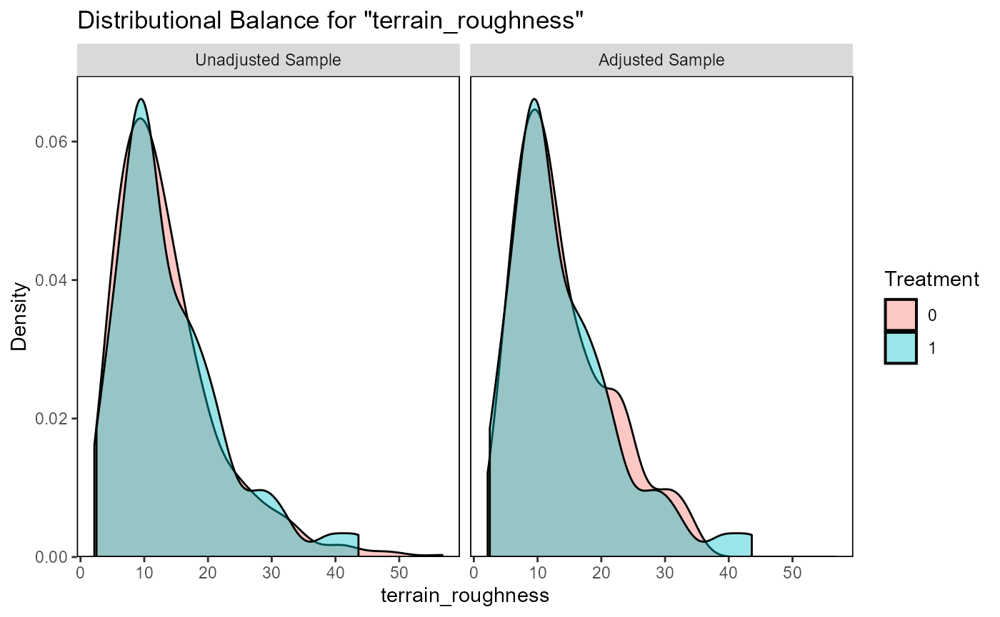
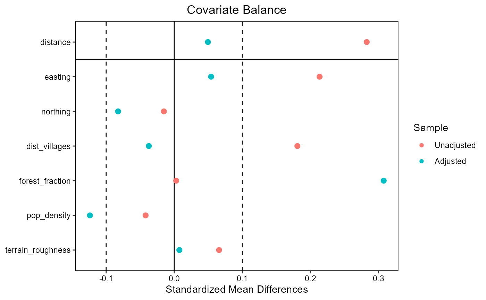

wildlife_circles_Finland
Source:vignettes/articles/wildlife_circles_Finland.Rmd
wildlife_circles_Finland.RmdWildlife circles dataset
To illustrate how the spatialBACI package can be used
with pre-defined monitoring sites, we use the
wildlife_circles dataset, which is a simplified subset of
the data used by Terraube et
al., 2020. The dataset is a simplification of the Finnish wildlife
triangles monitoring scheme (Helle et
al., 2016), where each circle is designed to pass through the three
vertices of the triangle made up of transects of 4 km. The
wildlife_circles dataset provides the outline of the
circles as polygons with a generic “ID” assigned, and indicates for each
circles whether it is located in a protected area (according to the World
Database on Protected Areas) or not (value of 1/0 in attribute
“PA”).
data(wildlife_circles)
wildlife_circles <- unwrap(wildlife_circles)
wildlife_circles
#> class : SpatVector
#> geometry : polygons
#> dimensions : 671, 2 (geometries, attributes)
#> extent : 191977.9, 727420.1, 6665446, 7757954 (xmin, xmax, ymin, ymax)
#> coord. ref. : ETRS89 / TM35FIN(E,N) (EPSG:3067)
#> names : ID PA
#> type : <int> <int>
#> values : 1 0
#> 2 0
#> 3 0
plot(centroids(wildlife_circles), "PA", )
In Terraube et al., 2020, the authors want to match wildlife circles inside protected areas to control sited outside protected areas using six matching covariates:
- Latitude
- Longitude
- Distance to the closest settlement
- Terrain ruggedness
- Human population density
- Percentage forest cover
We will here show how to perform such analysis using the
spatialBACI package and other common R packages.
Matching covariates
Extracting longitude and latitude
of the centroids of polygons in a SpatVector object, as is the case
here, is rather straightforward using the
terra::as.data.frame() functions of the terra
package, on which the spatialBACI package builds. The
following returns a data frame with for each wildlife circle the
original “ID” and “PA” columns, and additionally columns “x” and “y”
indicating the longitude and latitude of the centroid of the wildlife
circle.
LonLat <- centroids(wildlife_circles) |> as.data.frame(geom="XY")Distance to the closest settlement can be obtained
using osm_distance_places function, where we define
settlements OpenStreetMap features of the category “village” or above.
We set the timeout argument to 100 (seconds) to allow retrieval of all
settlements in Finland.
dist_village <- osm_distance_places(x=wildlife_circles, values="village+", timeout=100, osm_bbox = "Finland")Terrain ruggedness was by Terraube et al. defined as the standard deviation of the elevation within the wildlife triangles, and was included because large carnivores were expected to reach higher densities in more rugged terrain. Because Finland is mostly to the north of the area covered by the SRTM DEM, we will derive the terrain ruggedness from the ALOS DEM freely available in the Planetary Computer STAC catalog. We specify that we want to use the original 30m resolution in x and y of the ALOS DEM.
dem_finland <- dem(x=wildlife_circles,
v="elevation",
dem_source=list(endpoint="https://planetarycomputer.microsoft.com/api/stac/v1",
collection="alos-dem",
assets="data"),
dx=30, dy=30)There is no specific function in the spatialBACI package
to extract human population density. However, data in
raster format stored locally or accessible online can also easily be
integrated. In this example, we access the WorldPop population density of
Finland for the year 2016 (the year used in Terraube et al., 2020) at
1km resolution, found at https://hub.worldpop.org/geodata/summary?id=41175.
popdens_url <- "https://data.worldpop.org/GIS/Population_Density/Global_2000_2020_1km/2016/FIN/fin_pd_2016_1km.tif"Percentage forest cover was calculated by Terraube
et al. (2020) from the CORINE Land Cover (CLC) dataset for the year
2012. We downloaded the CLC dataset for the year 2012 from the Finnish
Environment Institute (SYKE) website (CORINE Land Cover 2012, 20 m
geotiff (zip) (latest update 30.9.2014)) and downloaded and unzipped it
to a local directory D:/Data. Extracting the forest
fraction over each wildlife circle requires knowledge of the values
under which the forest classes are stored (in this case values 22
through 29), and a custom function forestFrac_function.
clc_filename <- file.path("D:/Data/spatialBACI","clc2012_fi20m.tif")
forestFrac_function <- function(x){sum(x %in% 22:29)/length(x)}The collate_matching_layers() function is then designed
to convert all these matching covariates in different formats
(data.frame, SpatVector, online or locally stored rasters). For this, we
have to provide as inputs to collate_matching_layers() the
SpatVector file with the candidate control and impact sites
(wildlife_circles), and a list of the matching variables.
For matching variables in raster format, additional information must be
provided on how the raster data will be summarized over the vector units
of analysis. In this case, the raster dataset must be provided as a
named list element “data”, and additional named list elements specify
the summarizing function. For population density, we want to calculate
the interpolated value of the four 1km pixels adjacent to the centroids
of the wildlife circles, which can be used by adding the list element
method="bilinear". Surface roughness can be derived from
the DEM by setting the list element fun=sd (and
na.rm=TRUE to ignore occasional missing values in the DEM).
Finally, for formula to derive forest fraction is linked to the CLC
raster dataset. This step may take a few minutes, as the DEM data will
in this step be downloaded and processed.
vars_list <- list(LonLat,
dist_village,
list(data=clc_filename,
fun=forestFrac_function),
list(data=popdens_url,
method="bilinear"),
list(data=dem_finland,
fun=sd,
na.rm=TRUE)
)
matching_input_vector <- collate_matching_layers(wildlife_circles, vars_list=vars_list)In the resulting object, the column names of the data.table referring to the raster objects are simply taken from the layer names of the corresponding file. For clarity, we can update the column names (though they should not contain spaces).
matching_input_vector
#> $data
#> ID PA x y dist_places OBJECTID fin_pd_2016_1km elevation
#> <int> <int> <num> <num> <num> <num> <num> <num>
#> 1: 1 0 525952 7074646 6700.571 0.7325014 0.9526159 10.595218
#> 2: 2 0 292691 6789509 2832.911 0.7143827 2.2052165 9.535269
#> 3: 3 0 224286 6810768 3649.480 0.7311088 3.0462480 8.666103
#> 4: 4 1 243257 6882305 4978.423 0.4057153 0.8412691 5.335253
#> 5: 5 0 259491 6851807 1804.612 0.7654075 2.7937382 5.258316
#> ---
#> 667: 667 1 579276 7539446 50800.176 0.8995540 0.1023321 9.173672
#> 668: 668 0 550461 6838690 5149.095 0.7110290 2.1137298 13.109967
#> 669: 669 0 406736 7342837 12476.489 0.8474569 0.7097588 8.576482
#> 670: 670 0 539159 7623874 7862.777 0.9268883 0.3741452 33.181941
#> 671: 671 0 287663 6681534 1653.141 0.6267782 12.1432007 12.311376
#>
#> $spat.ref
#> class : SpatVector
#> geometry : polygons
#> dimensions : 671, 2 (geometries, attributes)
#> extent : 191977.9, 727420.1, 6665446, 7757954 (xmin, xmax, ymin, ymax)
#> coord. ref. : ETRS89 / TM35FIN(E,N) (EPSG:3067)
#> names : ID PA
#> type : <int> <int>
#> values : 1 0
#> 2 0
#> 3 0
names(matching_input_vector$data)[3:8] <- c("easting", "northing", "dist_villages", "forest_fraction" ,"pop_density", "terrain_roughness")Control-impact matching
To match one wildlife circle outside protected area to each site
within a protected area without replacement using the collated matching
covariates, we simply provide this resulting object to the
matchCI() function. We must provide the column names
defining the unique ID of each spatial unit of analysis
(colname.id="ID") and the treatment
(colname.treatment="PA"). In this example, we use 1:1
matching without replacement.
matching_output_vector <- matchCI(matching_input_vector,
colname.id="ID", colname.treatment="PA",
ratio=1, replace=FALSE, method="nearest")Matching results can now be evaluated using
evaluate_matching(), after which the user can decide to
continue their analysis with the matched dataset or repeat matching with
different parameters.
evaluate_matching(matching_output_vector)
#> Balance Measures
#> Type Diff.Adj
#> distance Distance 0.0495
#> easting Contin. 0.0541
#> northing Contin. -0.0825
#> dist_villages Contin. -0.0373
#> forest_fraction Contin. 0.3075
#> pop_density Contin. -0.1238
#> terrain_roughness Contin. 0.0075
#>
#> Sample sizes
#> Control Treated
#> All 610 61
#> Matched 61 61
#> Unmatched 549 0
#> Press <Enter> to continue.
#> Press <Enter> to continue.
#> Press <Enter> to continue.
#> Press <Enter> to continue.
#> Press <Enter> to continue.
#> Press <Enter> to continue.
#> Press <Enter> to continue.
#> Press <Enter> to continue.